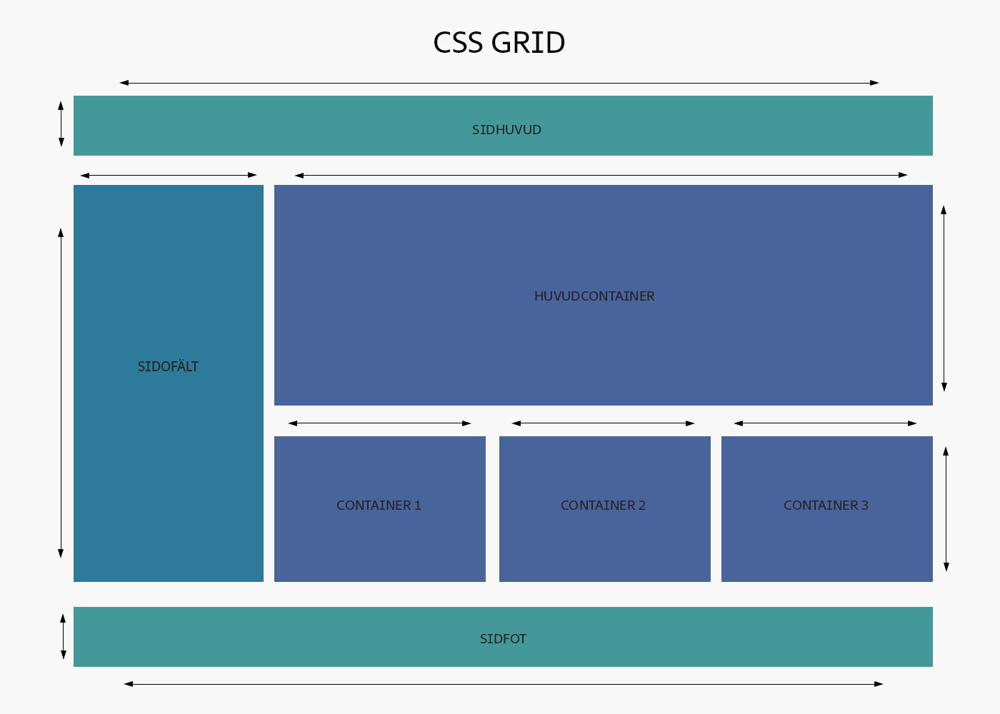
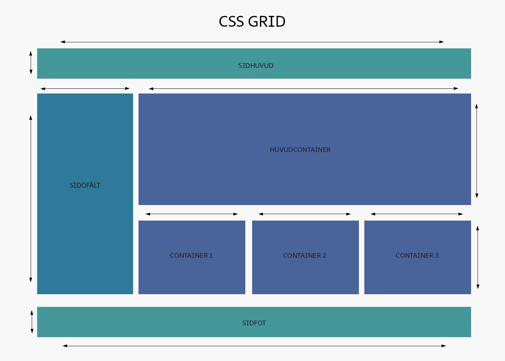

Ska jag använda Flexbox eller CSS Grid?
 

Flexbox och CSS Grid är två metoder för att bygga upp en layout med CSS. De jämförs ofta med varandra, trots att det är ganska stor skillnad mellan Flexbox och CSS Grid. I det här inlägget delar jag med mig av fördelar och nackdelar med de båda metoderna. Läs mer här.
För- & nackdelar med Flexbox
- Flexbox är bra för att strukturera innehållet (rubriker, stycken, länkar m.m.) i olika element (containers, sidhuvud, brödtext, m.m.)
- Bra för endimensionella element, det vill säga element som ska riktas åt ett håll. Flexbox bör användas om man vill skapa element som antingen är på en rad eller i en kolumn.
- Flexbox är inte det bästa valet för tvådimensionella element.
- Med Flexbox skriver man mindre kod än med CSS Grid.
- Bra om man behöver lite mer "självständiga flexbarn" som kan ha olika storlekar
För- & nackdelar med CSS Grid
- Bra för att strukturera layouten på element på en sida
- Bra för tvådimensionella element. CSS Grid bör användas om man vill skapa element som är både en rad och en kolumn. Mindre bra för endimensionella element.
- CSS Grid kan vara förvirrande på grund av dess tvådimensionalitet som du kan påverka med CSS-egenskaperna
- grid-column och grid-row. Jag brukar tänka så här:
- Bra för att strukturera layouten på element på en sida
- Bra för tvådimensionella element. CSS Grid bör användas om man vill skapa element som är både en rad och en kolumn.
- Bra för kontrollera elementets s.k. "barn"
- Mindre bra för endimensionella element.
Slutsats
Sammanfattningsvis kan man säga att båda bör användas i din layout! CSS Grid är bra när man ska göra större layouter med tvådimensionella element och den påminner lite om en tabell, medan flexbox är bättre för endimensionella layouter som t.ex. en navbar, knapp eller kort på webbsidan. Grid är också bra om man vill ha kontroll över elementets "barn", medan flexbox enklare och med mindre kod tillåter element-barnen att vara lite mer självständiga och vara olika storlekar.